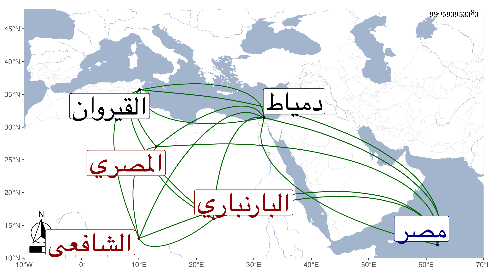

0902Sakhawi.DawLamic.ITO20230111-ara1.EIS1600.990593953383
Biography ID: 990593953383
457
أحمد بن محمد بن عمر بن محمد بن إبراهيم ولي الدين أبو زرعة ابن الجمال البارنباري المصري الشافعي سبط داود بن عثمان بن محمد بن عبد الهادي السبتي ويعرف بابن البارنباري . ولد في سنة ثمان وعشرين وثمانمائة بمصر ونشأ بها فحفظ القرآن وكتبا منها المنهاج ، واشتغل عند البهاء بن القطان والشهاب بن مبارك شاه الأول في الفقه والثاني في العربية وصحب البرهان المتبولي وغيره ، وحج مرتين وكتب عن شيخنا الإملاء بل وسمع بأخرة على جماعة كعمه النور علي والبدر النسابة وهاجر القدسية ، وناب في القضاء عن المناوي في سنة أربع وخمسين فمن بعده واستقر به العز الكناني سنة سبعين في مشيخة الآثار وكذا استقر به الزين زكريا في قضاء دمياط بعد الصلاح بن كميل وحمد في ذلك كله لعقله ومداراته وخبرته وسياسته مع فضيلة وتواضع ، وقد تردد إلي كثيرا وسمعته ونحو علو الأهرام يحكي عن جده لأمه وكان من الصالحين أنه سمعه يحكي عن أبيه عن جده عن ولي الله أبي العباس السبتي أنه قال يصلي العشاء بجامع عمرو في مصر كل ليلة مائة رجل من رجال القيروان وقابس وبعرفات والصبح ثمانون منهم . وتصدر بجامع عمرو ثم رغب عنه وأقرأ بعض الطلبة وكتب على مختصر أبي شجاع مطولا ومختصرا وشرع في شرح على المنهاج . ومات هو بدمياط في ليلة الثلاثاء ثالث عشر المحرم سنة تسع وثمانين ودفن بتربة تجاه فتح الأسمر رحمه الله وإيانا .
